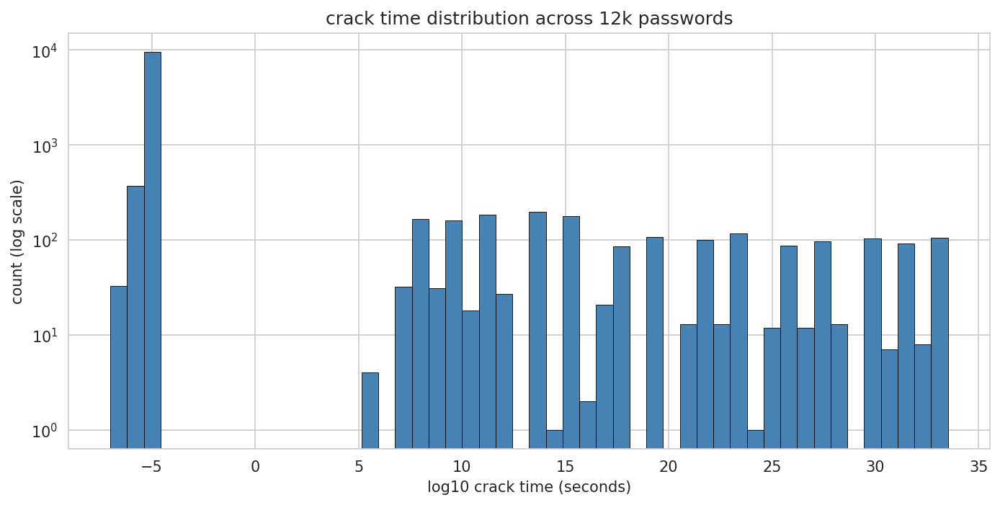
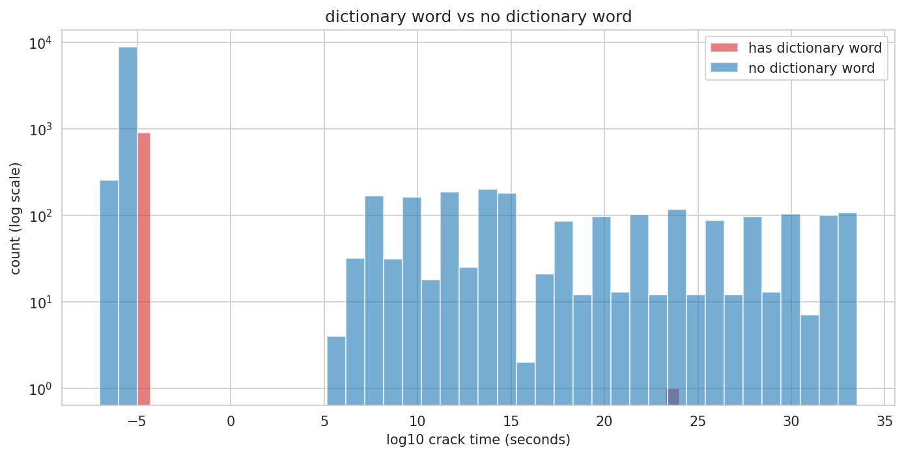
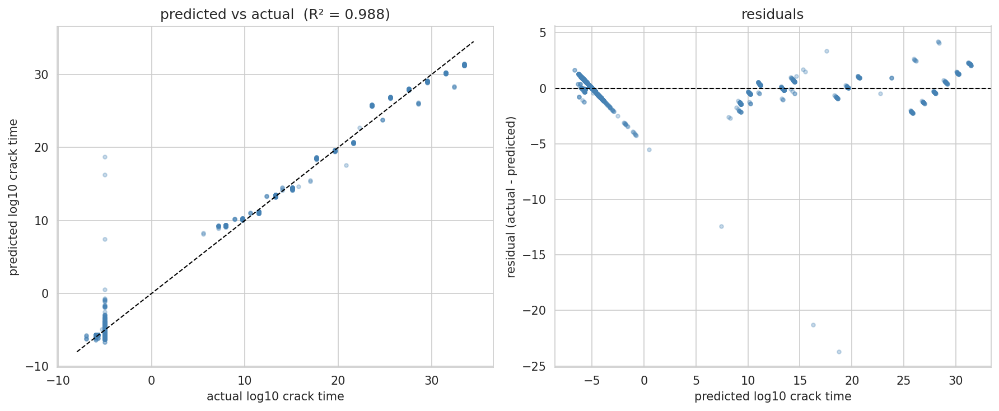

Predicting Crack Time
with Linear Regression
Gurman Basran · DASC 4850 · April 2026
"Which features of a password actually predict how long it takes to crack?"

"Do passwords containing common english words crack significantly faster?"
So Monkey123! is essentially as crackable as monkey. Capitalizing, adding digits and symbols are standard modifications crackers test automatically.

| Metric | Test Set |
|---|---|
| R-squared | 0.988 |
| RMSE (log10 sec) | 1.032 |
| MAE (log10 sec) | 0.531 |

Numbers assume MD5 speed; bcrypt/Argon2 shifts absolutes but not feature ranking. Next: deploy as a live strength checker in my Vaultwarden setup.